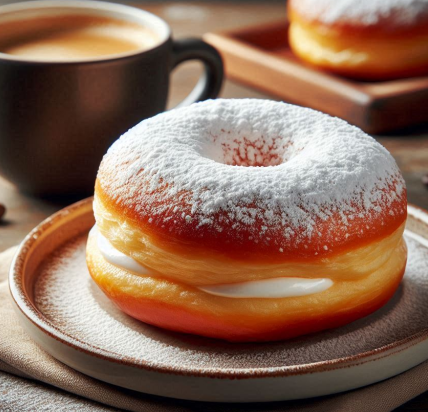

Cihans Kitchen
Berliner Krapfen mit Vanillecreme

Zutaten
Für den Teig:
1 Päckchen (10 g) Trockenhefe
80 g Butter (geschmolzen)
1 Teelöffel Vanilleextrakt (nach Belieben)
Zum Frittieren:
Sonnenblumenöl (zum Frittieren)
Für die Vanillecreme:
Zubereitung
-
Teig vorbereiten:
Das Mehl in eine große Schüssel geben. Zucker, Hefe und Salz hinzufügen und vermischen.
In die Mitte eine Mulde machen und die Eier, Milch, geschmolzene Butter und Vanilleextrakt hinzufügen.
Den Teig kneten, bis er glatt und elastisch ist (ca. 10 Minuten).
Den Teig in eine bemehlte Schüssel legen, mit einem Tuch abdecken und an einem warmen Ort 1 Stunde gehen lassen.
-
Frittieren vorbereiten:
Nach dem Gehen den Teig auf eine bemehlte Fläche geben und kleine Stücke (walnussgroß) abteilen und zu Kugeln formen.
Die Teigkugeln auf ein mit Backpapier belegtes Blech legen, abdecken und weitere 30 Minuten gehen lassen.
-
Frittieren:
In einem tiefen Topf das Öl erhitzen (ca. 170°C).
Die Teigkugeln vorsichtig ins Öl geben und auf beiden Seiten goldbraun frittieren.
Die fertigen Krapfen auf ein mit Küchenpapier belegtes Teller legen, um das überschüssige Öl abtropfen zu lassen.
-
Vanillecreme zubereiten:
Die Milch in einem Topf zum Kochen bringen.
In einer separaten Schüssel die Eigelbe, Zucker, Speisestärke und Vanillezucker verrühren.
Die heiße Milch langsam unter ständigem Rühren zur Eiermischung geben.
Die Mischung zurück in den Topf geben und bei schwacher Hitze unter ständigem Rühren eindicken lassen.
Die Creme vom Herd nehmen, die Butter hinzufügen und gut vermischen. Abkühlen lassen.
-
Krapfen füllen:
Die abgekühlte Vanillecreme in einen Spritzbeutel füllen.
An der Seite der Krapfen ein kleines Loch machen und die Creme hineinspritzen.
-
Servieren:
Die Krapfen mit Puderzucker bestäuben und servieren.
- Guten Appetit!